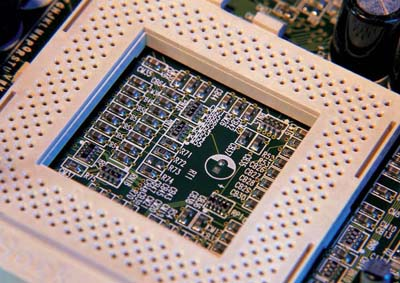

Voronoi 进阶教程
本教程由两部分组成. 第一部分给出两个现实世界问题的示例, Voronoi 库的默认配置就能够解决它们. 所谓默认配置, 是指接受带符号 32 位整数并输出浮点 (64 位 double) 坐标的配置. 我们提供这些示例是为了让最持怀疑态度的用户也相信, 他们很可能不需要为更高精度的输入或输出坐标类型配置库. 然而, 如果所提出的问题确实需要这样做, 本教程第二部分提供了对输入和输出坐标类型的功能完备的配置.
红色星球
问题描述
设想 NASA 计划向火星发送一个新的机器人. 每天位于地球的控制中心会发送一个目标点坐标, 机器人需要在当天结束前到达该点. 当然, 我们希望尽可能节省能量, 因此要选择尽可能短的路径. 在理想世界中这会是一条直线 (我们不考虑表面曲率), 但情况会变得更复杂, 因为火星上有一些岩石和坑洞, 我们的机器人无法穿过. 除此之外, 机器人本身具有一定的尺寸, 可能无法通过狭窄的地方.
Voronoi 图的应用
上面的问题可以用 Voronoi 图来解决. 第一阶段是用折线对障碍物 (岩石和坑洞) 进行离散化. 之后我们将计算输入线段集合的 Voronoi 图. 由于每条 Voronoi 边到最近的两个站点等距, 我们能够过滤掉因机器人尺寸而无法通过的边. 最后一步是运行经过一点优化的 A* 算法来找到最短路径或至少是次优路径, 这样就完成了.
输入几何的离散化
为了展示 Voronoi 库提供的默认输入坐标类型有多好, 我们将对整个火星面积进行离散化. 火星面积约为 1.44 * 10^8 平方千米, 即 1.44 * 10^18 平方厘米, 可以对齐到边长为 1.2 * 10^9 厘米的整数网格. 为了使 Voronoi 图在该网格边界上精确, 我们将输入地图复制 9 份 (3x3), 这样中央区域内的 Voronoi 图将为我们提供正确的连通性图. 这一步会把网格尺寸增大到 3.6 * 10^9 厘米, 小于 2^32. 因此我们能够以 1 厘米的精度离散化这颗红色星球的表面, 使用的是默认输入坐标类型 (带符号 32 位整数). 这意味着每个坐标的最大绝对误差可达 0.5 厘米. 考虑到机器人的半径为 0.3 米, 并且出于安全考虑会避开 1 米距离内任何足够大的障碍物, 这个误差是无关紧要的.
输出分析
对所得 Voronoi 图精度的估计此前已在
此处
说明过. 因此, 为了避免重复这些计算, 我们直接给出结论: 输出几何的最大绝对误差将出现在网格边界上, 其值为 2^-16 厘米, 约等于 150 纳米, 是一个复杂分子半径的 100 倍. 我们想指出, 离散化步骤的绝对误差远高于 Voronoi 图构建算法产生的误差.
VLSI 设计
问题描述

超大规模集成 (
VLSI
) 是通过把数千个晶体管组合到单个芯片上来制造集成电路的过程. 考虑到制造一个集成电路可能需要数周或数月, 设计师通常会花费大量时间分析版图, 以避免代价高昂的错误. 常见的静态分析检查之一是集成电路各组件之间的最小距离要求 (距离应大于规定值).
Voronoi 图的应用
事实证明, 输入点与线段集合中各组件之间的最小距离对应于 Voronoi 图的某条边. 这意味着我们可以遍历 Voronoi 图的每条边, 提取构成该边的输入几何对, 并求出二者之间的距离. 由于此类边的总数是 O(N) 量级 (N 为输入几何的数量), 一旦构建出 Voronoi 图, 就可以在线性时间内高效地找到最小距离.
输入几何的离散化
现代 CPU 的平均尺寸约为 2.5 x 2.5 厘米. 将其吸附到 32 位整数网格将给出 2.5 / 2^33 厘米的离散化精度, 即 3 皮米, 这个值比原子半径小 10 倍. 这样的精度即使对接下来几代处理器来说可能也足够了.
输出分析
输出几何的最大绝对误差将为 2.5 / 2^47 厘米, 即 0.2 飞米, 这个值比电子半径小 10 倍. 然而在这个特定场景中, 我们关心的不是输出的精度, 而是它的拓扑结构. 正如在
Voronoi 主页
中所指出的, 非常小的边会从 Voronoi 图中移除. 但用户不必担心, 因为对应于最小距离的那条边不会在其中. 这意味着我们能够在离散化精度内 100% 正确地识别出最近的对象对.
结论
上面两个例子展示了默认 Voronoi 坐标类型在宏观世界和微观世界中的使用. 它们的主要目的是让用户了解默认坐标类型所能提供的量级. 还有两个此前未提及的要点, 但它们与大多数现实世界问题相关:
在 32 位整数离散化网格内, 输出 Voronoi 图坐标的绝对误差略小于离散化本身的绝对误差, 因此完全可以忽略不计.
在上面两个问题中, 我们都没有考虑测量误差. 例如: 是否可能以 0.5 厘米的精度绘制火星地图, 或以亚原子精度获取电路部件的坐标? 我想这两个问题的答案都是"否". 这实际上意味着, 与测量设备产生的误差相比, 离散化步骤的误差可以忽略不计.
第二点意味着, 实际上没有必要提供操作浮点输入坐标的实现, 因为这些坐标总是可以吸附到整数网格. 如果用户对 32 位整数网格提供的精度不满意, 或者希望以更小的相对误差获取输出几何的坐标, 请继续阅读下一段.
Voronoi 坐标类型配置
在下面这一章中, 我们将把输入坐标类型扩展为 48 位带符号整数, 把输出坐标类型扩展为 80 位 IEEE 浮点类型 (long double). 本章的代码可在
voroni_advanced_tutorial.cpp
中找到. 虽然无法用 MSVC 编译器编译它 (MSVC 不支持 80 位 long double 类型; 需要 ieee754.h 头文件), 但它应该能让人清楚地了解库如何支持用户提供的坐标类型.
因此, 主要步骤是声明满足
此处
所述限制集合的 voronoi 坐标类型特征:
struct my_voronoi_ctype_traits {
typedef boost::int64_t int_type;
typedef detail::extended_int<3> int_x2_type;
typedef detail::extended_int<3> uint_x2_type;
typedef detail::extended_int<128> big_int_type;
typedef fpt80 fpt_type;
typedef fpt80 efpt_type;
typedef my_ulp_comparison ulp_cmp_type;
typedef my_fpt_converter to_fpt_converter_type;
typedef my_fpt_converter to_efpt_converter_type;
};
只要有可能, 总是最好使用 C++ 内建类型. 这就是我们使用 64 位带符号整数类型来处理输入坐标的原因.
int_x2_type
和
uint_x2_type
需要处理 96 位带符号/无符号整数. 由于没有这样的内建类型, 我们使用库提供的高效定长整数类型. 大整数类型应当能够处理 48 * 64 位整数, 即小于 32 * 128, 所以目前使用
extended_int<128>
类型就够了. 我们对
fpt_type
和
efpt_type
使用相同的浮点类型, 因为它有足够的指数位来表示 48 * 32 位和 48 * 64 位整数 (这也是我们不需要两个浮点转换器结构的原因).
ulp_cmp_type
结构检查两个 IEEE 浮点值是否在给定的带符号整数 ulp 范围内 (我们不会在这里分析相应的代码, 因为它需要深入理解
浮点架构
以及其
比较浮点值的方法
), 这里只提一下, 其声明如下:
struct my_ulp_comparison {
enum Result {
LESS = -1,
EQUAL = 0,
MORE = 1
};
Result operator()(fpt80 a, fpt80 b, unsigned int maxUlps) const;
};
最后一步是声明
my_fpt_converter
结构 (把整数类型转换为浮点类型):
struct my_fpt_converter {
template <typename T>
fpt80 operator()(const T& that) const {
return static_cast<fpt80>(that);
}
template <size_t N>
fpt80 operator()(const typename detail::extended_int<N>& that) const {
fpt80 result = 0.0;
for (size_t i = 1; i <= (std::min)((size_t)3, that.size()); ++i) {
if (i != 1)
result *= static_cast<fpt80>(0x100000000ULL);
result += that.chunks()[that.size() - i];
}
return (that.count() < 0) ? -result : result;
}
};
至此, 我们完成了 Voronoi 坐标类型特征的声明. 下一步是声明 Voronoi 图特征:
struct my_voronoi_diagram_traits {
typedef fpt80 coordinate_type;
typedef voronoi_cell<coordinate_type> cell_type;
typedef voronoi_vertex<coordinate_type> vertex_type;
typedef voronoi_edge<coordinate_type> edge_type;
struct vertex_equality_predicate_type {
public:
enum { ULPS = 128 };
bool operator()(const point_type &v1, const point_type &v2) const {
return (ulp_cmp(v1.x(), v2.x(), ULPS) == my_ulp_comparison::EQUAL &&
ulp_cmp(v1.y(), v2.y(), ULPS) == my_ulp_comparison::EQUAL);
}
private:
my_ulp_comparison ulp_cmp;
};
};
上面我们只是用新的坐标类型和相应的 ulp 比较结构声明了 Voronoi 原语类型和顶点相等谓词. 坐标类型相关结构声明完毕后, 我们就可以进入构建步骤本身了. 第一步是用一组随机点初始化 voronoi_builder 结构:
// 随机数生成器与分布. MAX 等于 2^48.
boost::mt19937_64 gen(std::time(0));
boost::random::uniform_int_distribution<boost::int64_t> distr(-MAX, MAX-1);
// 用新的坐标类型特征声明并配置 Voronoi 构建器.
voronoi_builder<boost::int64_t, my_voronoi_ctype_traits> vb;
// Voronoi 构建器初始化步骤.
for (size_t i = 0; i < GENERATED_POINTS; ++i) {
boost::int64_t x = distr(gen);
boost::int64_t y = distr(gen);
vb.insert_point(x, y);
}
第二步是生成 Voronoi 图, 与之前一样, 只需两行代码:
// 用新的坐标类型特征声明并配置 Voronoi 图结构.
voronoi_diagram<fpt80, my_voronoi_diagram_traits> vd;
vb.construct(&vd);
从这一步开始, 用户就可以操作 Voronoi 图数据结构了, 在本教程中我们输出所得 Voronoi 图的一些简单统计信息. 本教程中最困难的部分可能是 ulp 比较结构的声明. 库为 64 位浮点类型 (double) 提供了高效、注释完善且跨平台的实现. 因此最好的建议是参照那个实现, 但在这么做之前, 请认真想一想默认坐标类型是否真的无法处理你的问题.
版权:
版权所有 © Andrii Sydorchuk 2010-2012.
License:
按 Boost 软件许可 1.0 版 (Boost Software License, Version 1.0) 分发. (随附文件
LICENSE_1_0.txt
或复制于
http://www.boost.org/LICENSE_1_0.txt
)